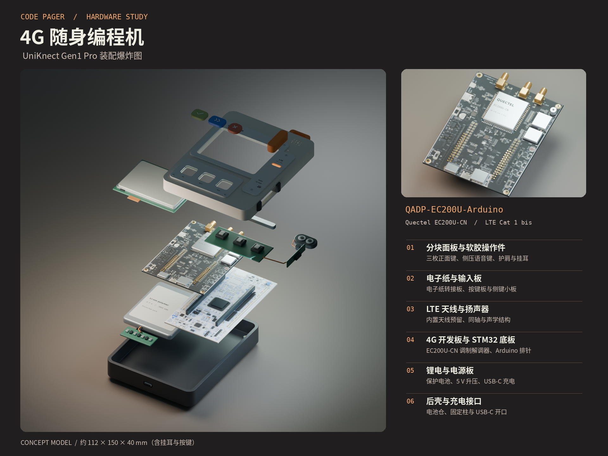

Code Pager 4G · 4G 随身编程机
电脑留在原地运行编程任务。人出门后，随身终端通过 4G 接收构建、测试和待确认简报，响铃提示。用户可从屏幕翻阅并按键回传，也可以按住语音键说出新的提示词。
指定开发套件为 UniKnect Gen1 Pro（QADP-EC200U-Arduino）。目前已完成九款 Blender 概念设计及交互演示。下一阶段验证蜂窝简报和按键回执，再测试录音上传与转写。
V1–V9 造型探索
V2 装配构想

电脑留在原地运行编程任务。人出门后，随身终端通过 4G 接收构建、测试和待确认简报，响铃提示。用户可从屏幕翻阅并按键回传，也可以按住语音键说出新的提示词。
指定开发套件为 UniKnect Gen1 Pro（QADP-EC200U-Arduino）。目前已完成九款 Blender 概念设计及交互演示。下一阶段验证蜂窝简报和按键回执，再测试录音上传与转写。
